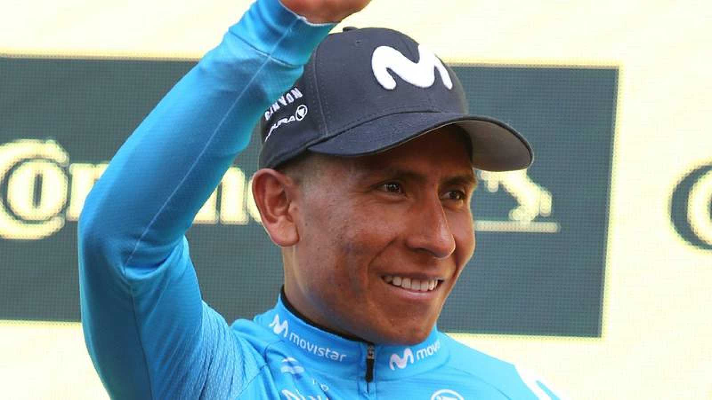

Ciclismo: Nairo Quintana Regresa a Movistar Después de Cinco Años
Publicado el 30 de octubre de 2023
El destacado ciclista colombiano, Nairo Quintana, ha anunciado su regreso a Movistar tras pasar cinco años fuera de la escuadra española. Este inesperado retorno marca un emocionante momento en su carrera después de un año sin competir en 2023. Nairo ha enfrentado desafíos significativos, incluyendo su separación de Arkea en 2022 debido a un resultado positivo en el control de tramadol, el cual sorprendentemente no resultó en una sanción oficial.
Un Regreso Triunfal
Nairo Quintana, quien previamente vistió los colores de Movistar desde 2012 hasta 2019, logrando hazañas notables como ganar el Giro de Italia en 2014, la Vuelta a España en 2016 y logrando tres podios en el Tour de Francia (segundo en 2013 y 2015 y tercero en 2016), ahora regresa con determinación. En un comunicado del equipo español Movistar, se ha anunciado este regreso que ha sorprendido a la comunidad ciclista.
Dedicación y Pasión
En un video compartido por Movistar para dar a conocer su incorporación, Nairo Quintana expresó su emoción por volver al equipo y su compromiso con el deporte. En medio de su año sin equipo, Nairo enfrentó dificultades y sacrificios considerables, pero ha encontrado la motivación para regresar. Afirmó: "Ha sido un año difícil. Días sin dormir, muchas jornadas de enorme sacrificio, subiéndome a la bicicleta y tratando de caminar hacia adelante, con sol o con lluvia. Pero ha valido la pena. No voy a desaprovechar la oportunidad. Conozco los valores del equipo, los valores del deporte. Voy a dar todo de mi parte para hacerlo bien y quiero aportar al equipo para obtener los mejores resultados".
Desafíos Previos
Nairo Quintana retorna a Movistar después de una breve etapa en el equipo Arkea, donde incluso había renovado su contrato en 2022. Sin embargo, un resultado positivo en el control de tramadol un día antes del inicio de la Vuelta a España en 2022 cambió drásticamente su rumbo. A pesar de ser descalificado del Tour de Francia en el mismo año, en el que logró un impresionante sexto puesto, Nairo quedó sin equipo, aunque el positivo no resultó en una sanción oficial.
Este artículo fue generado por una IA y puede contener datos no precisos.